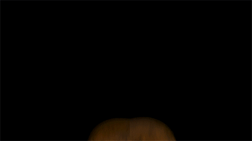

Descubra! A Verdadeira Historia De Five Nights At Freedy's.
Five Nights at Freddy's (FNaF) é uma franquia de mídia norte americana criada por Scott Cawthon. O primeiro jogo com o mesmo nome foi lançado em 8 de agosto de 2014, depois de seu lançamento a série se tornou um sucesso mundial. O trabalho consiste em verificar as câmeras de segurança. A tarefa parece simples, mas já na primeira noite, coisas estranhas começam a acontecer. Porém, a pizzaria, que por fora parece um lugar de diversão com foco no público infantil, possui diversos rumores envolvendo sumiços de crianças e até homicídios.
Todas As Curiosiades Que Você Não Sabia Sobre A Entidade Herobrine.
- O Herobrine pode ser um espirito (espíritos não tem olhos) e isso também se da ao fato do olho dele brilhar
- Nas atualizações de minecraft, se você for olhar bem no "changelog" irá perceber que a mojang sempre coloca 'no final' - Removed Herobrine.
- Se você se deparar em frente a ele, ele pode "remover" todas as folhas de árvores que estão por perto. Isso e muito mais como; fazer letreiros gigantes com letras de seu nome (H, E, R, O, B, R, I, N, E), transformas animais em 'bichos demoníacos' e etc
- Ele pode fazer construções ao longo do mundo. Traps, casas, pirâmides, letreiros, entre outras construções
Todas As Curiosiades Que Você Não Sabia Sobre O Filme Do Shrek.
- Sua história foi escrita em 1995 por William Steig, aos 83 anos
- Bill Murray foi cotado como protagonista do filme, imagina?
- Nicolas Cage recusou o papel pois não queria interpretar o ogro com medo da repercussão com as crianças
- O filme originalmente misturaria animação com live-acion, mas a ideia foi cortada após testes iniciais